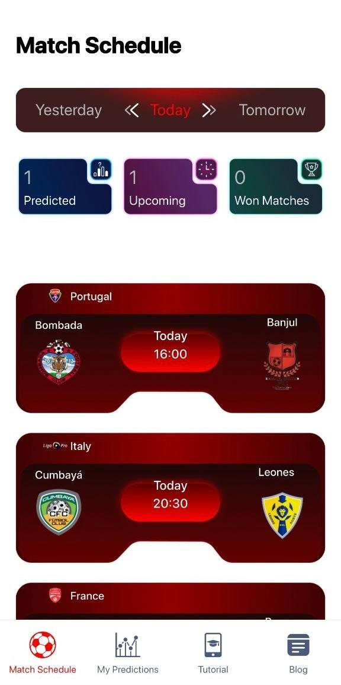
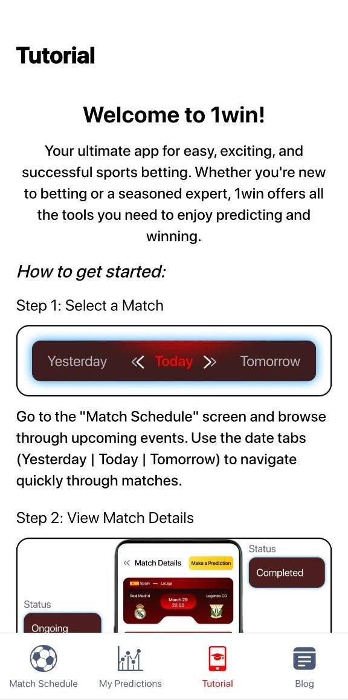
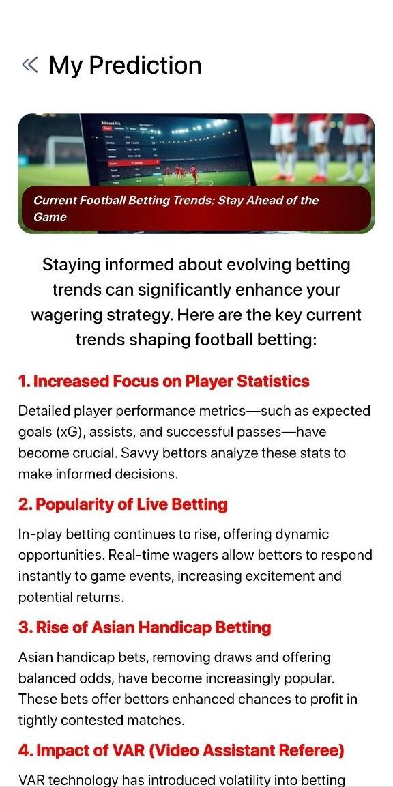
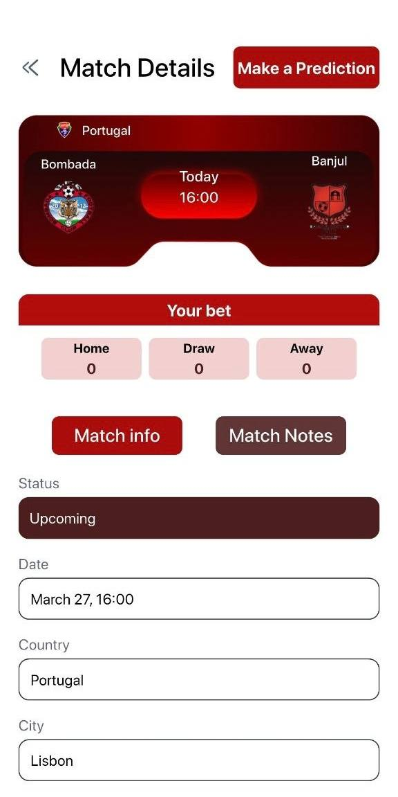
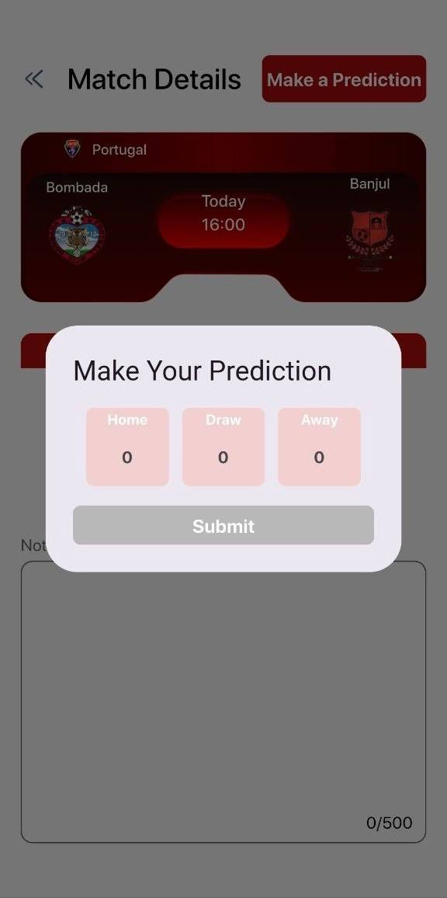
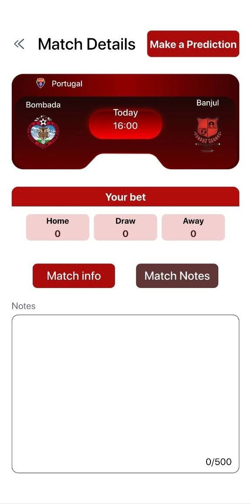
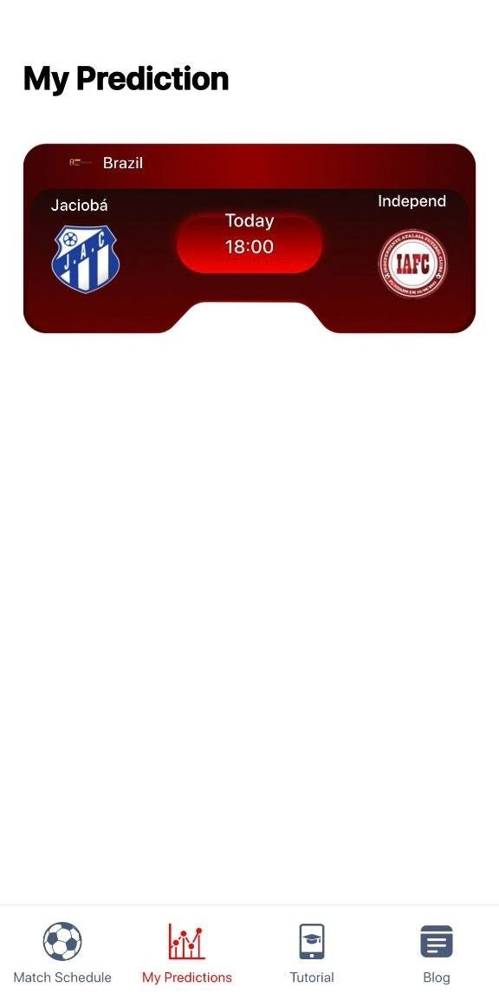
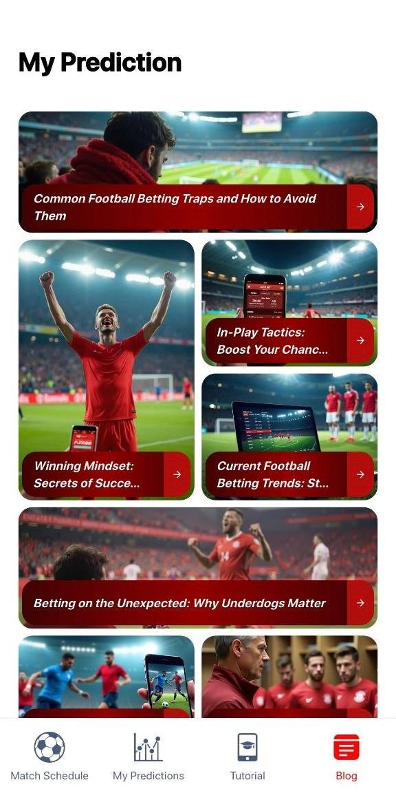

Football prediction companion
Matches · Notes · Trends · Insights
Track matches, make predictions, and follow football stories with a sharper mobile flow
Olimp Match Schedule combines upcoming match browsing, detailed prediction screens, personal notes, tutorial guidance, and a football insight section into one clean app experience built around match-day attention and betting-oriented reading.

Scan match cards, leagues, dates, prediction counters, and current schedule blocks.


Move from pure match tracking into football trends and betting-oriented editorial content.
Olimp Match Schedule feels like a match briefing product where schedules, predictions, notes, and football reading all live in one connected space
Main product capabilities
Match schedule browsing
Users can move through daily fixtures and identify upcoming matches through structured schedule cards.
Detailed match view
Each match can open into a deeper layout with country, city, date, and status information.
Prediction entry
The app supports a direct home-draw-away prediction flow through a dedicated modal panel.
Notes for each match
Users can keep written notes alongside match details for a more personal decision process.
Prediction history
Saved prediction views help users keep track of their personal picks across matches.
Blog and tutorial content
The app extends beyond simple schedule viewing with guide screens and football trend reading.
App journey
From match discovery to personal prediction
Schedule first
The app opens around upcoming matches instead of hiding the main value behind extra steps.
Match context
Users move from a card overview into a more grounded match information layout.
Notes panel
The app supports both tracking and reflection, not just passive viewing.
Prediction action
The core betting-related interaction is direct and visually isolated.
Prediction history
Users can go back and review their earlier choices instead of losing them in the flow.
Tutorial entry
The app includes onboarding-style guidance for first-time users.
Insight browsing
The content feed brings lifestyle and editorial energy into the app.
Deeper reading
The product moves beyond matches and gives users something to study between fixtures.
Current screen
Start on the match schedule screen
The schedule view introduces daily navigation, prediction counters, and card-based match scanning for a quick first impression.
Interface showcase
Schedule overview
The schedule screen is the central navigation point, letting users move through daily football fixtures and see immediate match cards.
Details and notes
Switch between structured match information and a dedicated note-taking panel without leaving the same context.


Prediction action
The modal prediction screen isolates the main action and gives the interface a focused decision point.

Tutorial onboarding
Tutorial screens make it easier to understand how the app moves from schedule to prediction and back again.

Editorial football content
The blog section gives the app more depth by adding visual story cards and longer betting-related football reading.

Why the app feels stronger than a basic fixture list
★★★★★
“It feels more complete because it is not only about matches, but also about predictions, notes, tutorials, and football trend reading.”
Nikita R.
Football app user
★★★★★
“The match details screen makes each fixture feel more useful because it gives room for context and personal notes.”
Artem L.
Prediction-focused user
★★★★★
“The blog and article part makes the app feel like a football reading product too, not just a schedule tool.”
Max P.
Football content reader
Download app
Use Olimp Match Schedule to follow matches and build your own prediction flow
Browse matches, open details, save predictions, keep notes, use tutorials, and read football betting insights through one mobile experience designed around match-day focus.